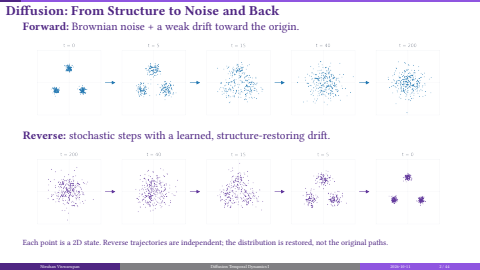
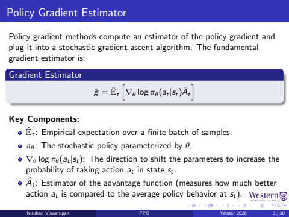
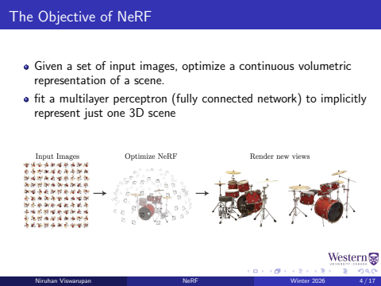

|
|
Mixed Graph Signal Analysis of Joint Image Denoising / Interpolation
Niruhan Viswarupan,
Gene Cheung,
Fengbo Lan,
Michael S. Brown
ICASSP 2024 — IEEE International Conference on Acoustics, Speech, and Signal
Processing, Seoul, Korea
arXiv
|
Presentations
Slides from my talks and paper discussions. Selected recordings are available on
PACT.

Diffusion Temporal Dynamics I
DDPM forward and reverse processes, conditional diffusion, and DDIM sampling.
Slides
/
Video

Policy Gradient Estimation (PPO, Part I)
The policy gradient derivation, credit assignment, and variance reduction with advantage estimates.
Slides
/
Video

NeRF: Neural Radiance Fields for View Synthesis
Scene representation, volume rendering, and training neural radiance fields for novel views.
Slides
/
Video
|